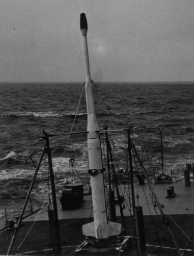

Операция «Аргус»
Коль скоро я упомянул в предыдущей главе об операции «Аргус», не буду откладывать на потом рассказ о ней. Тем более что и по срокам проведения она хорошо вписывается в общую хронологию повествования.
Сегодня мы уже стали забывать о том ядерном безумии, которое охватило человечество на рубеже 1950-х—1960-х годов. Совершенствуя свои системы вооружений, главные противники в глобальном противостоянии чуть ли не ежедневно взрывали ядерные и термоядерные устройства. Причем проводились эти испытания во всех природных сферах: в атмосфере, под землей, под водой и даже в космосе. Положить конец этому безумию удалось только в 1963 году, когда СССР, США и Великобритания подписали договор о запрещении испытания ядерного оружия в трех средах (в атмосфере, под водой и в космическом пространстве). Но к тому моменту человечество успело много чего натворить.
Начало использования космического пространства в качестве ядерного испытательного полигона датируется летом 1958 года, когда в обстановке повышенной секретности в США началась подготовка к проведению операции «Аргус». Американцы окрестили ее в честь древнегреческого всевидящего стоглазого чудовища. Кому-то такая аналогия показалась уместной, хотя увидеть какую-либо связь между этим монстром и сутью проводимого эксперимента весьма проблематично.
Основной целью проведения операции «Аргус» являлось изучение влияния поражающих факторов ядерного взрыва, произведенного в условиях космического пространства, на земные радиолокаторы, системы связи и электронную аппаратуру спутников и баллистических ракет. Кроме того, предполагалось изучить взаимодействие радиоактивных изотопов плутония, высвобождавшихся во время взрыва, с магнитным полем Земли. По крайней мере, так ныне утверждают американские военные. Но это, скорее, были попутные эксперименты. А главная задача была в испытании боевых ядерных зарядов в реальных условиях.
Отправной точкой проведения эксперимента стала довольно эксцентричная, по тем временам, теория, выдвинутая сотрудником Радиационной лаборатории Лоуренса Николасом Кристофилосом. Он предположил, что наибольший военный эффект от ядерных взрывов в космосе может быть достигнут в результате создания искусственных радиационных поясов Земли, аналогичных естественным радиационным поясам (поясам Ван Аллена).
Чтобы не возвращаться более к этому вопросу, сразу скажу, что проведенный эксперимент подтвердил выдвинутую теорию, и искусственные пояса действительно возникали после взрывов. Их обнаружили приборы американского научно-исследовательского спутника «Эксплорер-4», что позволило впоследствии говорить об операции «Аргус», как о самом масштабном научном эксперименте, который когда-либо проводился в мире.
В качестве места проведения операции была выбрана южная часть Атлантического океана между 35 и 55 градусами южной широты. Такой выбор обусловливался конфигурацией магнитного поля, которое в этом районе наиболее близко расположено к поверхности Земли и могло сыграть роль своеобразной ловушки, захватывая заряженные частицы, образованные взрывом, и удерживая их. Да и высота полета ракет позволяла доставить ядерный боеприпас только в эту область магнитного поля.
Для осуществления взрывов в космосе были использованы ядерные заряды типа W-25 мощностью 1,7 килотонны, разработанные для неуправляемой ракеты «Джин» класса «воздух – воздух». Вес самого заряда составлял 98,9 килограмма. Конструктивно он был выполнен в виде обтекаемого цилиндра длиной 65,5 сантиметра и диаметром 44,2 сантиметра. До операции «Аргус» заряд W-25 испытывался трижды, и он продемонстрировал свою надежность. Кроме того, во всех трех испытаниях мощность взрыва соответствовала номинальной, что было важно при проведении эксперимента.

Ракета Х-17А с ядерным зарядом для ««Аргуса»
В качестве средства доставки ядерного заряда была использована модифицированная баллистическая ракета X-17A, разработанная компанией «Локхид». Ее длина с боевым зарядом составляла 13 метров, диаметр – 2,1 метра.
Для проведения эксперимента была сформирована флотилия из девяти кораблей 2-го флота США, действовавшая под обозначением совершенно секретной оперативной группы № 88. Пуски производились с головного судна флотилии «Нортон-Саунд».
Первое испытание было проведено 27 августа 1958 года. Точное время пуска ракеты, как и во время двух последующих экспериментов, неизвестно. Но, учитывая скорость и высоту полета ракеты, можно ориентировочно считать, что старт состоялся в интервале от 5 до 10 минут до времени взрыва, которое известно. Первый ядерный взрыв в космосе «прогремел» в 02:28 по Гринвичу на высоте 161 километр над точкой земной поверхности с координатами 38,5 градуса южной широты и 11,5 градуса западной долготы, в 1800 километрах юго-западнее южноафриканского порта Кейптаун.
Через три дня, 30 августа, в 03:18 по Гринвичу второй ядерный взрыв был произведен на высоте 292 километра над точкой земной поверхности с координатами 49,5 градуса южной широты и 8,2 градуса западной долготы.
Последний, третий заряд в рамках операции «Аргус», был взорван 6 сентября в 22:13 по Гринвичу на высоте 750 километров (по другим данным – 467 километров) над точкой земной поверхности 48,5 градуса южной широты и 9,7 градуса западной долготы. Даже если считать верной вторую цифру, все равно это испытание является самым высотным из космических ядерных взрывов за всю недолгую историю таких экспериментов.
Немаловажная деталь, о которой вспоминают не столь часто. Все взрывы в рамках операции «Аргус» являлись лишь частью проводимых экспериментов. Их сопровождали многочисленные пуски геофизических ракет с измерительной аппаратурой, которые проводились американскими учеными из различных районов земного шара непосредственно перед взрывами и спустя некоторое время после них.
Так, 27 августа были проведены пуски четырех ракет: ракеты «Джейсон» с мыса Канаверал в штате Флорида; двух ракет типа «Джейсон» с авиабазы «Рэйми» в Пуэрто-Рико; ракеты «Джейсон» с полигона Уоллопс в штате Виргиния. А 30–31 августа с тех же самых стартовых позиций были запущены уже девять ракет. Правда, взрыв 6 сентября пусками геофизических ракет не сопровождался, но наблюдения за состоянием ионосферы велись с помощью метеорологических зондов.
Так совпало, что советским специалистам удалось получить информацию о первом из американских космических взрывов.
В день испытания, 27 августа, с полигона Капустин Яр были проведены пуски трех геофизических ракет: одной Р-2А и двух Р-5А. Измерительной аппаратуре, установленной на ракетах, удалось зафиксировать аномалии в магнитном поле Земли. Правда, чем были вызваны эти аномалии, стало известно чуть позже.
Как я уже написал, подготовка и проведение операции «Аргус» было окружено плотной завесой секретности. Однако тайну удалось хранить совсем недолго. Спустя всего полгода, 19 марта 1959 года, газета «Нью-Йорк таймс» опубликовала статью, в которой во всех подробностях было рассказано о том, что делали американские военные в южной части Атлантики. Последним ничего не оставалось, как, скрепя сердце, и признать факт проведения ядерных испытаний в космосе, и огласить результаты измерений. Тем не менее до сих пор не все подробности эксперимента стали доступны широкой общественности. С одной стороны это объясняется тем фактом, что прошел слишком большой срок, чтобы описываемые события претендовали на сенсационность. С другой стороны, в настоящее время вопрос проведения ядерных взрывов в космосе не столь актуален, как это было сорок лет назад, поэтому и интересуются им в меньшей степени, чем современными ядерными проблемами.